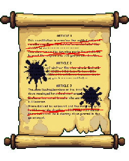
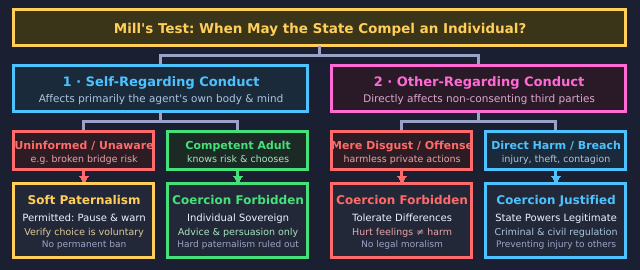
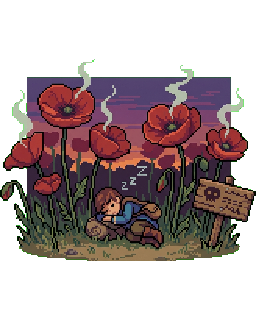
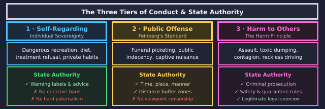
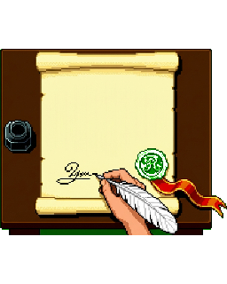

The Wizard is gone, carried off in his balloon. Princess Ozma has found his old constitution, and it is "a document with problems." She is convening a council to rewrite it, and you are on the council.
Use → (or Next) to advance and reveal points. F = fullscreen.
Welcome to The Emerald Constitution. The Wizard is gone, carried off in his balloon. Princess Ozma has found his old constitution, and she calls it a document with problems. She's convening a council to rewrite it, and you're on the council. Whenever it's your turn, I'll stop and wait for you.
Before the First Session
Five gut-checks, with no right answers. Say where you stand. The council will return to them once the new constitution is ratified.
The government may forbid adults from doing things that harm only themselves.Being deeply offended by something is a kind of harm.A doctor should be able to override an adult patient's foolish-but-informed choice.Vaccine mandates are a violation of personal liberty.Some things should be illegal simply because they are immoral.Before the first session, here are five gut-checks. There are no right answers. Say how much you agree with each of these five statements. The council will return to them once the new constitution is ratified. When you've rated all five, press Submit.Saved. You'll come back to these at the end.

The Wizard's Handiwork
Ozma reviews the legal code, which fails in two opposite directions:
Ozma reviews the legal code, which fails in two opposite directions.
It is smotheringly paternalistic, locking green spectacles onto citizens for their own cheerful comfort.
Yet it abandons public safety by leaving toxic poppy fields unfenced and ignoring market fraud.
In Mill's terms, the defect is plain: it protects citizens from themselves while abandoning them to each other.
Society may coerce a person only to prevent harm to others.
The Council Consults a Book
Glinda produces John Stuart Mill's 1859 classic, On Liberty.
The council consults a book. Glinda produces John Stuart Mill's 1859 classic, On Liberty. Mill's core claim is that society may coerce a person only to prevent harm to others.
Mill feared the tyranny of the majority, where society coerces dissenters into conformity.
His central question matches the council's: when may society rightfully compel an individual?
His answer is what he called "one very simple principle" to govern all state coercion.
One Very Simple Principle
"The only purpose for which power can be rightfully exercised over any member of a civilized community, against his will, is to prevent harm to others."
Here's the principle in Mill's own words. The only purpose for which power can be rightfully exercised over any member of a civilized community, against his will, is to prevent harm to others.
A person's own physical or moral good is never a warrant for state coercion; you may plead or warn, but never compel.
Compelling people for their own good is called paternalism.
Over himself, over his own body and mind, the mature individual is sovereign.
The principle covers competent adults, excluding children and those unable to reason for themselves.
Why Value Liberty?
As a utilitarian, Mill argues liberty must earn its keep by advancing human flourishing:
Why value liberty? As a utilitarian, Mill argues liberty must earn its keep by advancing human flourishing.
Authorities are fallible; overriding individuals bets that the state can never be mistaken.
Society learns which ways of life succeed only by permitting open experiments in living.
Choosing for oneself is essential to flourishing, anchoring liberalism's neutrality on how to live.
The First Vote
Permitted: prevents harm to othersForbidden: compels people for their own goodAll citizens shall wear green spectacles, for their own cheerfulnessNo vendor shall cheat a customerAll citizens shall eat their greens, for their own healthNo citizen shall strike anotherAll citizens shall attend the temple, for the good of their soulsNo wagon driver shall run down a pedestrianThe first vote. The council applies Mill's principle to six draft clauses. Which may stand? Sort each clause under permitted or forbidden, then press Check answers.Right. Mill allows power over a competent adult only to prevent harm to others. Compelling people for their own good is never enough.
The Council's Minutes
Power may be used over a citizen against their will only to prevent
harm to
others;
their own good is not a sufficient warrant.
Compelling people for their own good is called
paternalism.
The council's minutes. Fill in each blank by choosing an option or typing a word, then press Check.That's the principle in one sentence. Power against a person's will is allowed only to prevent harm to others. Their own good is never sufficient warrant.
The Line Everything Depends On
Affects primarily you: your body, personal risks, diet, and plans. Society may advise and warn, but cannot compel.
An adult who eats poorly, gambles personal savings, or climbs dangerous peaks alone.
Directly risks harm to others: their bodies, property, or legal rights. Here state coercion is legitimate.
A manufacturer who dumps toxic waste into a drinking river, or sells tainted food.
The line everything depends on. On one side is self-regarding conduct, which is sovereign territory. It affects primarily you: your body, personal risks, diet, and plans. Society may advise and warn, but cannot compel. Think of an adult who eats poorly, gambles personal savings, or climbs dangerous peaks alone. On the other side is other-regarding conduct, the public sphere. It directly risks harm to others: their bodies, property, or legal rights. Here state coercion is legitimate. Think of a manufacturer who dumps toxic waste into a drinking river, or sells tainted food.
The Intervention Test
The intervention test. This flowchart is a decision procedure built on Mill's principle. Coercion is legitimate only to prevent direct harm to others. If conduct is self-regarding, coercion is forbidden for competent adults. Soft paternalism is permitted only to verify knowledge. If conduct is other-regarding, mere offense can't be coerced, but direct harm to others justifies legal sanctions.

A decision procedure built on Mill's principle: coercion is legitimate only to prevent direct harm to others.

The Poppy Question
The toxic poppy fields model hazardous recreation and drug policy:
The poppy question. The toxic poppy fields model hazardous recreation and drug policy.
Banning entry to protect adults from foolishness is hard paternalism, overriding voluntary choice.
Uninformed wanderers are different: pausing someone unaware of danger is permitted soft paternalism.
Mill backs hazard signposts, poison labels, and child bans, which inform agency without prohibiting it.
Decision Point: The Poppy Fields
Not graded. The council is split three ways and so is the room.
Ban entry. Some choices harm the chooser badly enough that the state may step in.Signpost the fields, register the guides, ban bringing children, and let adults walk in.Nothing. A free adult needs no signposts from a council.Decision point: the poppy fields. The council is split three ways, and so is the room. Adults keep walking into the poppy fields knowing exactly what happens. What should the draft say? This one isn't graded. Pick the answer closest to your view, and read its note.The middle answer is Mill's own. He allows anything that informs a choice and nothing that replaces it.
Mill's Bridge
A traveler steps toward an unsafe bridge with no time to warn him. May you seize him?
Mill's bridge. A traveler steps toward an unsafe bridge with no time to warn him. May you seize him?
Mill says yes: briefly stopping him honors his presumed desire not to fall into the chasm.
Once informed of the broken planks, an adult who still insists on crossing must be let through.
This distinguishes soft paternalism (verifying choice) from hard paternalism (overriding it).
Marking Up the Draft
Poisons sold in the market must carry a clear warning labelA soldier found drunk on guard duty, putting the camp at risk, shall be punishedAny citizen found drunk at home shall be fined for self-neglectAll citizens shall practice temperance for their own moral characterMarking up the draft. Check every clause the Harm Principle permits, then press Check answers.Right. Poison labeling informs choice rather than overriding it, and a drunk soldier on watch endangers others. The other two compel competent adults purely for their own good.
The Council's Docket
The council's docket. You'll see six clauses from the Wizard's old constitution, one at a time. Classify each one: does it prevent harm to others, prevent harm to self, or enforce morality? After each pick, you'll see the council's ruling. When you're ready, press Continue.No forge shall discharge toxic slag or contaminated water into the public river.No citizen shall climb the mountain peaks without a licensed guide, for their own safety.Games of cards and dice are forbidden, as they corrupt the moral character of those who play.No wagon shall be driven faster than a trot within crowded public squares.All citizens shall wear the green spectacles within the city, for their own comfort and cheerfulness.No vendor shall knowingly sell spoiled or misdescribed goods in the public market.
The Pamphleteer
A pamphleteer publishes an article claiming grain merchants starve the poor:
The pamphleteer. A pamphleteer publishes an article claiming grain merchants starve the poor.
Mill argued opinions that corn dealers starve the poor must circulate freely in print.
However, shouting those same words to an angry, torch-bearing mob outside a dealer's home may be punished.
Print invites deliberation, whereas inciting an agitated crowd creates an immediate hazard of harm.
"What If the Pamphlet Is False?"
The merchants argue the claims are false. Why protect falsehood? Mill's three reasons:
What if the pamphlet is false? The merchants argue the claims are false. Why protect falsehood? Mill gives three reasons.
If a silenced view turns out to be true, society loses truth because censors are never infallible.
If it contains partial truth, debate provides the missing piece to correct prevailing ideas.
Even completely false views prevent received truths from decaying into unexamined dogma.
The Night It Almost Went Wrong
The circumstances turn words into instigation of immediate harmThe claim has now been proven false, removing protectionThe merchants' feelings are hurt badly enough to count as harmHe spoke the words aloud instead of printing themThe night it almost went wrong. The speaker shouts his claim to an angry mob outside a grain merchant's home. Under Mill, what makes this punishable when the pamphlet was not? Pick an answer.Right. For Mill, the opinion itself never loses protection. What changes is the act.
The Problem of Deep Offense
What about conduct that causes no physical injury or financial loss, but generates intense moral outrage? Consider a radical group picketing private family funerals with offensive slogans, like the real-world Snyder v. Phelps dispute.
The problem of deep offense. What about conduct that causes no physical injury or financial loss, but generates intense moral outrage? Consider a radical group picketing private family funerals with offensive slogans, like the real-world Snyder versus Phelps dispute.
Feinberg's Offense Principle
A century after Mill, philosopher Joel Feinberg argued the Harm Principle needs a carefully restricted supplement:
A century after Mill, the philosopher Joel Feinberg argued the Harm Principle needs a carefully restricted supplement.
Subjective offense, outrage, and disgust differ from harm because they do not damage a person's vital interests or rights.
However, profound and unavoidable public offense (such as picketing a private funeral) may warrant narrow legal limits.
Feinberg's balancing test evaluates how intense the offense is, whether it was avoidable, and its social value.
Hedging the Offense Principle
Liberal systems adopt narrow compromises when regulating public offense:
Hedging the offense principle. Liberal systems adopt narrow compromises when regulating public offense.
Regulations impose reasonable time, place, and manner buffer zones around funerals rather than banning viewpoints.
The danger is that offense is elastic, allowing majorities to label controversial opinions offensive.
If hurt feelings count as harm, the Harm Principle collapses and paternalism returns under a new name.
Mapping State Authority
Mapping state authority. This diagram shows three tiers of conduct and state authority. Tier one is self-regarding conduct. Only labels and persuasion are permitted, and coercive bans are forbidden. Tier two is public offense. Time, place, and manner buffer rules are permitted, and viewpoint censorship is forbidden. Tier three is harm to others. Criminal sanctions and quarantine are permitted.

Three regulatory tiers: personal liberties, public offense buffers, and harms justifying coercion.
The Health Chapter
The council examines medical law, where old contradictions were most glaring:
The health chapter. The council examines medical law, where old contradictions were most glaring.
The old code forced patients refusing a doctor's remedy into restraint, practicing hard paternalism.
Yet during infectious epidemics, it provided zero quarantine rules or reporting to protect the public.
The old law repeated its twin errors: coercing competent individuals while abandoning public health.
The Right to Refuse Treatment
Consider a competent adult patient who declines surgery, preferring comfort care at home:
The right to refuse treatment. Consider a competent adult patient who declines surgery, preferring comfort care at home.
Forcing medical treatment on a competent patient under restraint is textbook hard paternalism.
Mill insists that over one's own body, the individual is sovereign: doctors may plead, but never compel.
Modern bioethics enshrines this principle as patient autonomy and the right to informed refusal.
Epidemics and Harm to Others
The council considers public health measures during an airborne epidemic:
Epidemics and harm to others. The council considers public health measures during an airborne epidemic.
Refusing vaccine or quarantine during an outbreak differs fundamentally from refusing personal surgery.
An infected person transmits pathogens to vulnerable infants and immunocompromised neighbors.
Because transmission is other-regarding, preventing harm to others justifies public health mandates.
The Safety Harness Debate
Mandatory wagon harnesses mirror modern controversies over seatbelt and helmet laws:
An unharnessed driver risks primarily his own life. Compelling safety equipment coerces competent adults for their own good.
"Post crash fatality statistics, but let adults choose."
Drivers rarely crash alone: emergency crews face hazards, public funds pay trauma care, and dependents lose support.
"Injuries impose heavy financial burdens on the community."
The safety harness debate. Mandatory wagon harnesses mirror modern controversies over seatbelt and helmet laws. Here are the two sides. The anti-paternalism side calls this a self-regarding choice. An unharnessed driver risks primarily his own life, and compelling safety equipment coerces competent adults for their own good. Its slogan is, post crash fatality statistics, but let adults choose. The diffuse harm side makes the public-burden argument. Drivers rarely crash alone. Emergency crews face hazards, public funds pay trauma care, and dependents lose support. Its slogan is, injuries impose heavy financial burdens on the community.
Decision Point: The Safety Harness
No. Post injury data at wagon yards and let adults decide.Yes. Crashes impose real costs on families and public funds.Only where the cost to others is large and measurable.Decision point: the safety harness. Should the law require safety harnesses in fast wagons? This one isn't graded. Pick the answer closest to your view, and read its note.Every answer here costs something. The third answer is roughly where modern law sits, and it is the least tidy of the three.
Voting the Health Chapter
Citizens contagious with sleeping-sickness may be quarantined during an outbreakSellers of tonics and remedies must state their contents and known risks truthfullyA competent adult who refuses treatment shall receive it under restraintDoctors must report outbreaks of contagious disease to the councilVoting the health chapter. Check every health clause the Harm Principle permits, then press Check answers.Right. Quarantining the contagious, honest labels on remedies, and reporting outbreaks all prevent harm to others. Forcing treatment on a competent refuser is the one the principle forbids.
Voluntary Choice
Operators engineer commercial poppy fields with maze-like paths and hidden exits:
Voluntary choice. Operators engineer commercial poppy fields with maze-like paths and hidden exits.
The principle protects voluntary choice, but manipulative design actively subverts decision capacity.
Real-world analogs include casino architecture, loot boxes, and infinite scroll designed to defeat self-control.
Restricting exploitative design targets commercial deception rather than penalizing personal choice.
Harms With No Single Victim
A core challenge that 19th-century liberalism struggled to address at scale is aggregate or diffuse environmental harm:
Harms with no single victim. A core challenge that nineteenth-century liberalism struggled to address at scale is aggregate or diffuse environmental harm.
A single factory chimney or car exhaust pipe causes no measurable injury on its own.
However, thousands of emissions combine to produce toxic smog that damages an entire population's lungs.
The Harm Principle easily justifies environmental regulation once the law accounts for cumulative contributions to collective harm.
When Falsehood Causes Rapid Harm
Another major contemporary challenge is viral medical misinformation, such as false claims that a vaccine is lethal:
When falsehood causes rapid harm. Another major contemporary challenge is viral medical misinformation, such as false claims that a vaccine is lethal.
Mill assumed public deliberation provides ample time for truth to refute and overtake dangerous falsehoods.
When panic spreads instantly during a lethal outbreak, third parties suffer preventable death before rebuttal can take effect.
These modern problems illustrate where the Harm Principle transitions from a neat formula into a complex constitutional balancing test.
Critics of Liberal Neutrality
The council hears formal dissents from traditions that argue the state should promote goodness, not merely prevent harm:
Critics of liberal neutrality. The council hears formal dissents from traditions that argue the state should promote goodness, not merely prevent harm.
Perfectionism, originating with Aristotle, holds that political institutions should actively cultivate moral excellence and virtue.
Legal moralism asserts that a society requires a shared moral code to survive, giving the law authority to punish harmless immorality.
Lord Devlin famously defended this view against H.L.A. Hart in 1960s Britain, arguing private vice undermines social order.
The Communitarian Challenge
A deeper critique questions whether unencumbered, sovereign individuals exist:
The communitarian challenge. A deeper critique questions whether unencumbered, sovereign individuals exist.
Communitarians argue human identities and duties are deeply rooted in community ties.
Because our lives are interdependent, almost no significant action is purely self-regarding.
Liberals reply that using interdependence to justify coercion invites authoritarianism.
The Hardest Vote
Hard paternalismSoft paternalismLegal moralismBan the poppy fields even for adults who know exactly what happens, for their own goodHold back a traveler stepping onto the broken bridge until he knows the planks are rottenBan a private practice that harms no one, because the community thinks it immoralRestrain a competent patient who refuses surgery, and operate anywayPause a wanderer who doesn't know the poppies put people to sleep, and tell himPunish private vice, because a society needs a shared moral code to surviveThe hardest vote. The council hears six proposals. Sort each one under the concept it's an example of: hard paternalism, soft paternalism, or legal moralism. Then press Check answers.Right. Hard paternalism overrides an informed adult's choice for their own good. Soft paternalism steps in only to make sure a choice is informed and voluntary. Legal moralism punishes conduct because it is thought immoral, even when it harms no one.

Ratification Day
"Citizens are sovereign over themselves. The law reaches only harm to others."
Ratification day. The new constitution reads: Citizens are sovereign over themselves. The law reaches only harm to others.
Struck: forced medical care, lifestyle mandates, and private morality bans.
Added: river pollution controls, consumer fraud rules, and epidemic quarantine.
Open: seatbelt-style harness rules remain active debates over diffuse harm.
Revisit Your Instincts
Here is where you stood before the first session. Re-rate each one and see whether the council's work moved you. Staying put is fine, so long as you can now defend the spot in Mill's own terms.
Here is where you stood before the first session. Re-rate each one and see whether the council's work moved you. Staying put is fine, so long as you can now defend the spot in Mill's own terms. When you're done, press Submit.Saved. Now, a quick summary of the lesson.
The Council Adjourns
The old constitution is archived, replaced by Mill's liberal charter:
The council adjourns. The old constitution is archived, replaced by Mill's liberal charter.
Power is legitimate solely to prevent non-consensual harm to others.
Liberty rests on fallibility, experiments in living, and individuality.
The framework distinguishes self-regarding choice from other-regarding harm.
Principles for Modern Governance
Here are the principles for modern governance.
Freedom of speech protects even false or unpopular opinions, penalizing speech only when circumstances create direct incitement to harm.
Medical ethics respects competent treatment refusal as self-regarding, while justifying quarantine and vaccine rules to halt contagion.
Ongoing legal debates center on diffuse collective harms, behavioral manipulation, and competing communitarian or perfectionist ideals.
Visit every slide, complete each interactive check, and submit both belief surveys.
For Further Reading
If you'd like to go further, here are some good places to start, each with a note on why it's worth your time. Thanks for playing.
John Stuart Mill, On Liberty (1859), chapters 1, 2 and 5. Read online. The harm principle, the case for free speech, and Mill's own test cases.
Joel Feinberg, Offense to Others (Oxford University Press, 1985), chapters 7 and 8. Why offense is not harm, and when the law may still act.
H. L. A. Hart, Law, Liberty, and Morality (Stanford University Press, 1963). Hart's reply to Devlin on whether law should enforce morality.
Sarah Conly, Against Autonomy: Justifying Coercive Paternalism (Cambridge University Press, 2013), introduction. A modern defense of coercive paternalism, written against Mill.
Gerald Dworkin, “Paternalism,” Stanford Encyclopedia of Philosophy (2002, rev. 2020). Read online. Hard and soft paternalism, with Mill's unsafe bridge as a test case.
About this lesson. Brendan Shea, PhD, wrote this lesson with help from AI tools. Claude (Anthropic) helped draft the text and code and check facts, and the illustrations were made with AI image generators. The narrator's voice is synthetic (Google Gemini text-to-speech). The author reviewed everything and is responsible for any errors.